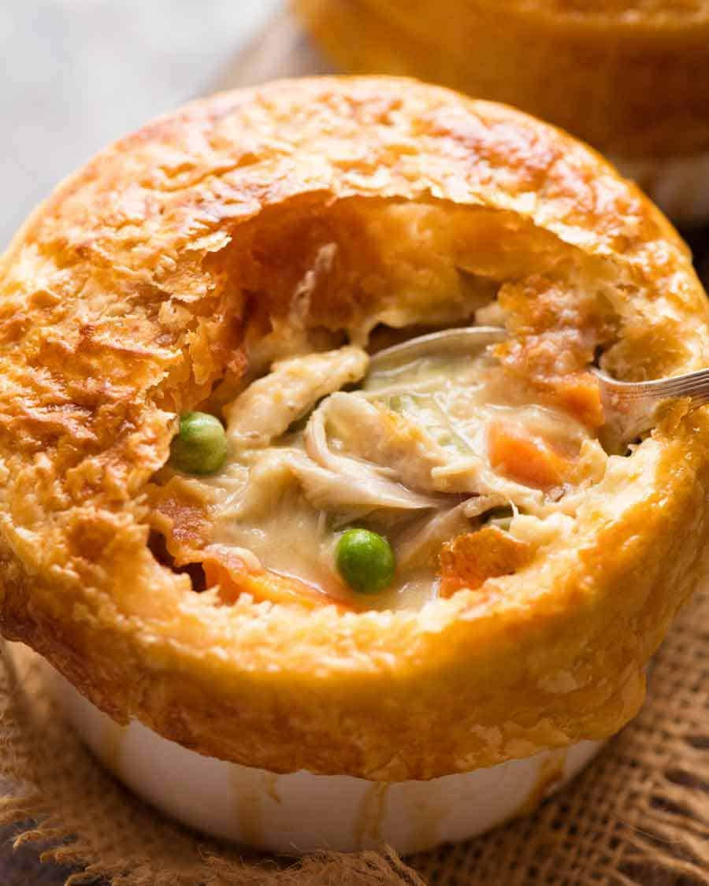

Chicken Pot Pie

Description
An easy, flavorful chicken pot pie recipe that's ready in about an hour's time. Let's get cookin'!
Ingredients
- 1 (10 ounce)package of frozen veggies
- cooking spray
- 1 (41.1 ounce) package refrigerated 9-inch pie crusts, divided
- 1 (10.5 ounce) can condensed cream of chicken soup
- 1/2 cup mayonnaise
- 1/2 cup milk
- 1/2 teaspoon celery salt
- 1/2 teaspoon garlic powder
- 1/2 teaspoon black pepper
- 1/8 teaspoon ground thyme
- 1 (3 pound) rotisserie chicken, boned and shredded
Steps
- Preheat the oven to 400 degrees F (200 degrees C).
- Place mixed vegetables in a microwave-safe bowl. Microwave on high power for 4 to 5 minutes. Drain.
- Meanwhile, lightly grease a 9-inch pie plate with cooking spray. Place 1 pie crust in the bottom of the prepared pie plate.
- Stir condensed coup, mayonnaise, milk, celery salt, garlic powder, pepper, and thyme together in a large bowl. Add chicken and mixed vegetables; mix well. Pour into the bottom pie crust. Place remaining pie crust on top of the pie plate. Trim so crust is even with the edge of the plate and use a fork to press crust down around edges to seal. Cut 3 small slits near the center of the crust. Cover the outside edges of the crust with foil or a pie protector to prevent edge from overcooking.
- Bake in the preheated oven for 30 minutes. Remove foil and continue baking until crust is brown and flaky, 5 to 10 minutes.
Nutrition Facts
Per Serving: 627 calories; protein 31.7g; carbohydrates 30g; fat 42g; cholesterol 93.7mg; sodium 757.4mg.
Return to Main Page